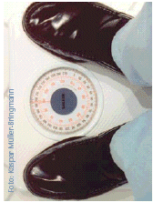

Eine übermäßige Aufnahme von besonders fetthaltigen Nahrungsmitteln lässt den Blutfettspiegel ansteigen und erhöht so das Herzinfarkt- und Schlaganfallrisiko.
Übergewicht ist immer bedingt durch eine insgesamt zu hohe Kalorienzufuhr (zuviel Energie über die Nahrung – zu wenig Energieverbrauch durch den Körper). Daher ist für eine langfristige Gewichtsreduktion eine ausgewogene Reduktion der in den Nahrungsmitteln enthaltenen Energie notwendig.
VORSICHT: Einseitige Diäten können zu Essstörungen führen und langfristig sogar zur Gewichtszunahme beitragen ("Jo-Jo-Effekt"). Hier kann eine speziell ausgebildete Ernährungsberaterin zusammen mit Ihrem Hausarzt weiterhelfen.